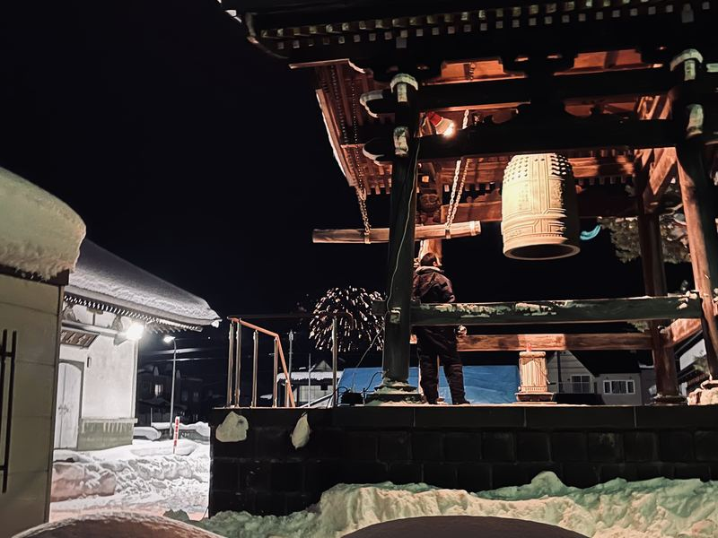
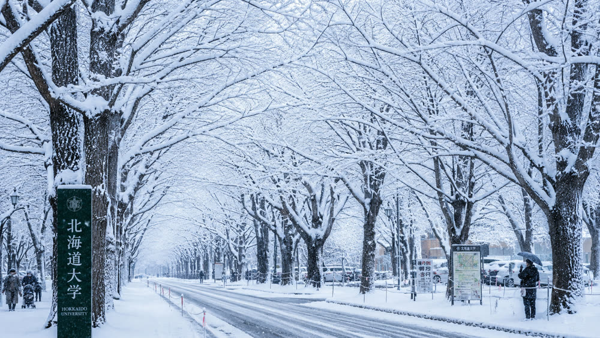
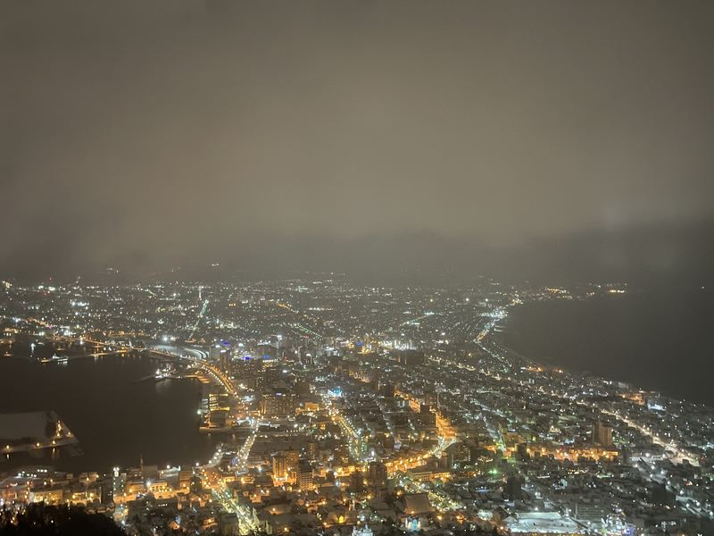
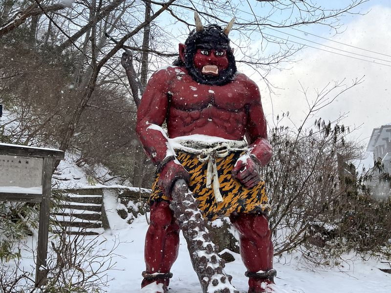

🔔 제야의 종
새해를 알리는 첫 종소리
자정이 되자마자 눈 쌓인 절 마당에 울려 퍼진 제야의 종소리와 함께, 비에이에서 조용하고 특별한 새해를 맞이했습니다.

Hokkaido University 1년간의 교환학생 시절, 눈의 나라에서 보낸 겨울

なごり雪
イルカ

자정이 되자마자 눈 쌓인 절 마당에 울려 퍼진 제야의 종소리와 함께, 비에이에서 조용하고 특별한 새해를 맞이했습니다.

케이블카를 타고 오른 하코다테산 정상에서, 양쪽 바다 사이로 펼쳐진 도시의 불빛을 보며 감탄이 절로 나왔던 순간입니다.

펄펄 끓는 온천의 근원, 지고쿠다니 입구를 지키는 커다란 붉은 오니 동상 앞에서 흩날리는 눈을 맞으며 사진을 남겼습니다.